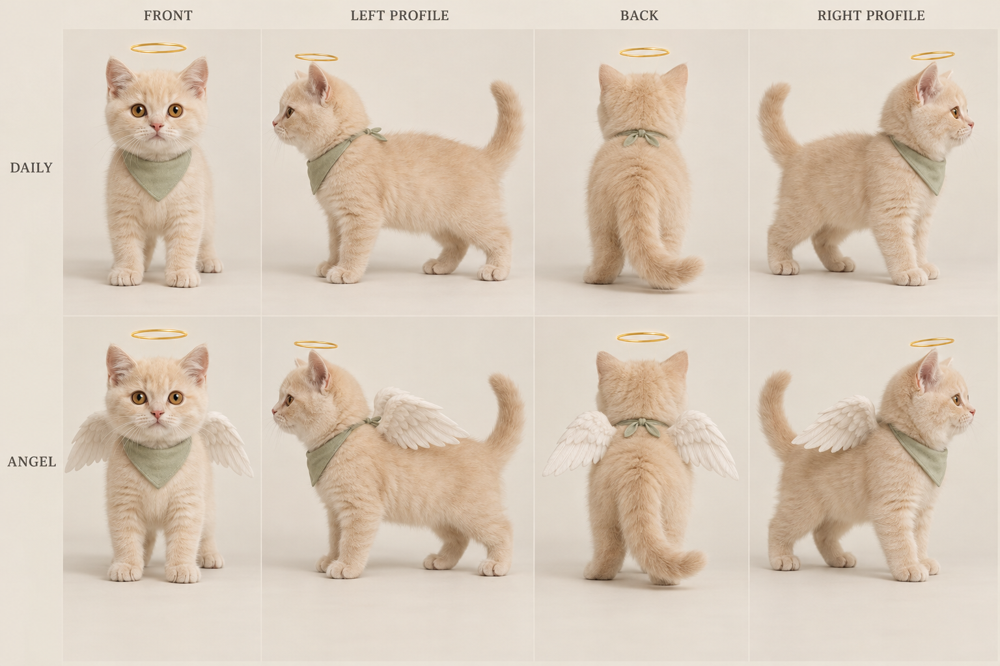
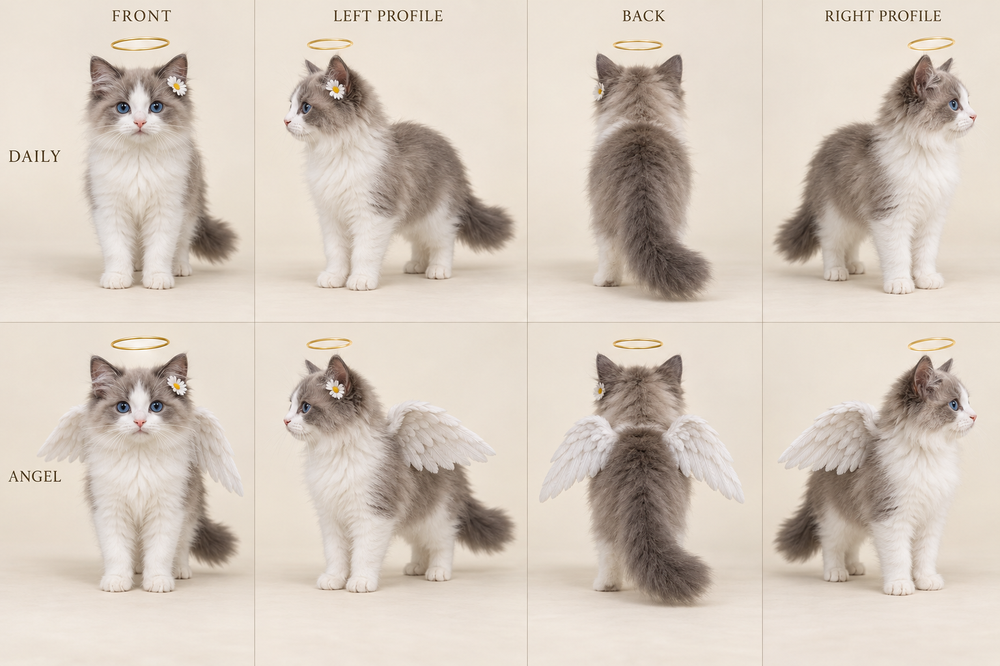
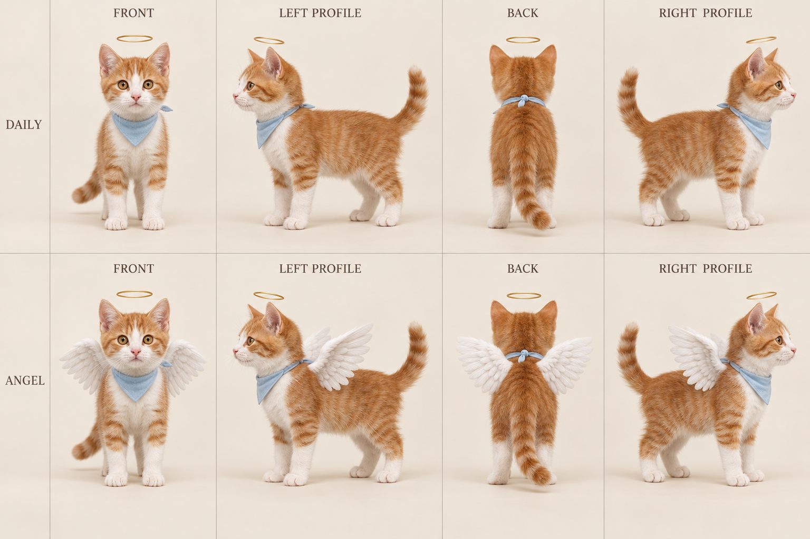
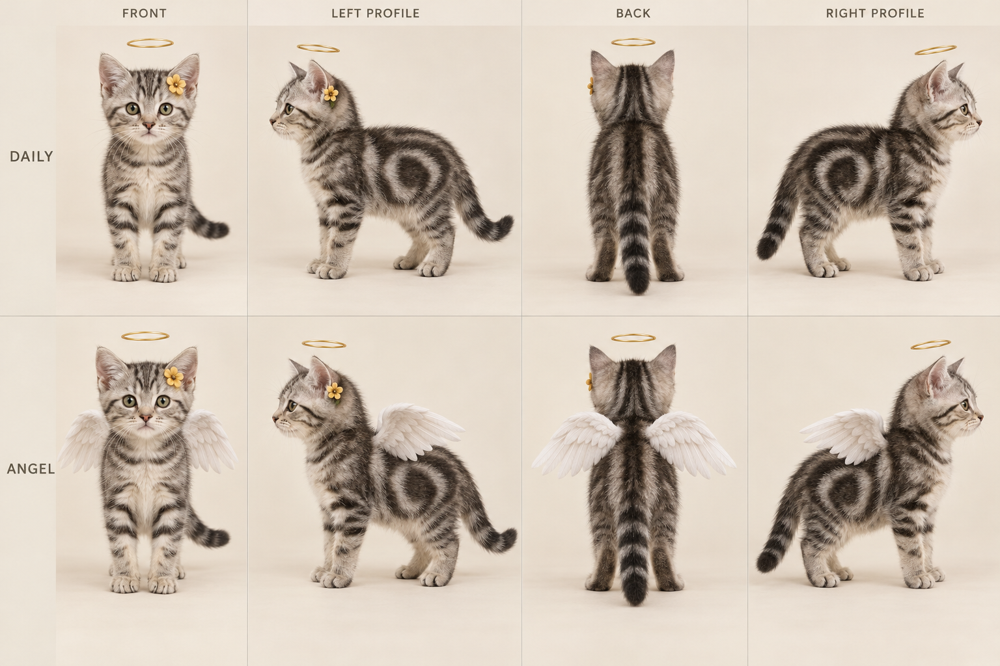
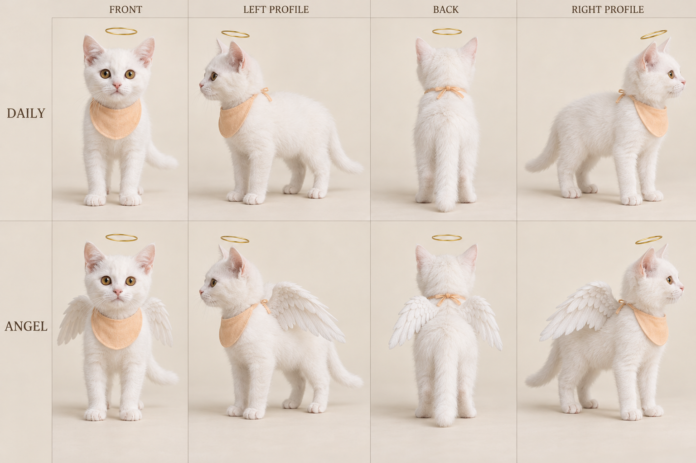

历史存档 · V0.5这一轮因过于写实已由V0.6重新探索；本页仅供版本对照。
展开文档目录
01
项目定位
小动物有自己的愿望，也会察觉我们的难过，并尝试照顾我们。
项目判断标准一个选题即便画面好看，如果与牵挂、理解、陪伴、获得善意完全无关，就不宜进入主线。
02
世界观母文案
在人类生活的声音之外，
还有一些很轻的声音。
它们来自门口等了很久的小猫，来自陪主人走过很多年的老狗，也来自雨棚下面、努力护住同伴的流浪动物。
它们不一定明白什么是加班、失业、离别。
它们只知道，那个每天摸自己脑袋的人，最近回家后不怎么说话了；那个总会经过巷口的人，今天没有来；身边更小的生命，需要一个不会漏雨的地方。
当小猫终于需要另一只爪子帮忙时，它会把自己的心愿托付给一根胡须。胡须从轻轻张开的前爪间升起，消失在人间，又落在云上小愿事务所的接收碟里。
灯灯是那里的一名年轻工作人员。
灯灯把胡须贴近耳边，耳尖轻轻一动，便听懂了这次求助。它能带来一点小小的奇迹，却不能替任何人过完生活。
所以，它做的事情通常很小：让一次错过变成相遇，让一份心意终于被发现，或者陪一只不知道怎么办的小动物，再试一次。
人类很少知道发生过什么。
他们只会觉得，
今天好像没有那么难熬了。
03
世界规则
创作团队必须清楚，观众不必一次知道。首集不做世界观讲解。
灯灯可以提供机会，最终的选择仍由当事者完成。
例如流浪猫希望小猫被收养：灯灯帮助它们被发现；求助猫观察、尝试靠近、建立信任；人类自己决定是否伸出手。来电动物必须有行动，故事不能变成“打电话—施魔法—问题消失”。
暂时不开发：复杂接线流程、任务积分、寿命交换与复杂额度结算、层层审批、管理者训话、天堂部门斗争、老者猫导师。事务所不承担大量解释工作。
03.1
联络媒介 · 心愿胡须
它把一根自己的胡须交给天空，请另一只爪子，来帮自己守住一件重要的事。
本轮确定的方向求助猫主动取下自己的一根胡须，忍过一瞬间的疼痛，对着胡须许愿；两只前爪轻轻张开，胡须浮起、化光消失，随后出现在云上事务所。灯灯拿起胡须贴近耳边，耳尖轻动，便理解本次求助，收拾小包准备出发。
这是本项目的原创童话设定。地面猫仍不会说人话、不会打字；观众听见的许愿词属于心声，地面实际只有轻轻的喵声、呼吸与环境声。
一、媒介规则：珍贵、直接、容易看懂
二、固定动作链：从舍不得，到愿意交出去
看向牵挂的对象→取下胡须→捧近鼻尖许愿→张爪放行→云端抵达→贴耳、耳尖一动→收包出发
重点不是反复解释操作，而是让观众看见：它原本舍不得，但为了那个人或小动物，愿意把这一次机会送出去。许愿前的回头看、许愿后的松爪，是两处最需要表演的动作。
求助者一侧
认真地把心愿交出去
取下后先护住胡须，鼻尖靠近；释放时一只前爪迟疑地追了一点点，又收回来。神情从不舍变成期待，避免连续哭泣。
接线员一侧
一动耳朵，就进入行动
灯灯用前爪轻托胡须，贴近耳侧；耳尖轻动、目光变认真，立刻合上小包。观众已听过许愿，不再播放一遍任务说明。
三、首集完整仪式分镜 · 约12秒
以下为创作时长建议，不是模型生成参数。仪式前先用人间镜头交代困境；正常集可压缩到6—8秒。
常规集压缩版：胡须已经在爪间 → 一句心声与放行 → 云端匹配接收 → 贴耳、耳动、合包。取须的痛感不必每集重演；同一仪式的不同剪法不等于增加新规则。
四、许愿文案：像悄悄拜托，不像拨打客服
最简固定句
“帮帮我吧。”
前面的画面已经说明它牵挂什么时使用。胡须携带完整意愿，无须字幕把事情从头讲完。
带一点孩子气
“接线员，接线员……”
可接：“让她睡一会儿吧。”重复称呼表达小心翼翼的期待，不设为必须念对的咒语。
替别人许愿
“让它们今晚别淋雨。”
镜头回到猫身后被护住的小猫，让一个具体对象承接这句话。
声音可在轻柔心声与简短字幕之间选择一种主表达；猫的嘴只保留轻喵或自然呼吸。它不会打字，也没有获得日常口吐人言的能力。
五、视觉资产与连续性
- 胡须是一根，始终认得出来自然的轻微弧度、清楚的逆光轮廓与一个柔和须尖亮点。亮光用于让镜头看清，不随意变成羽毛、项链或复杂法器。
- 前爪保持猫的结构“双手张开”落实为坐姿中的两只前爪轻轻分开；托举通过爪背或爪侧表现，不生成人类手指。细小取须动作可用遮挡与剪辑完成。
- 云端只新增必要物件一个接收碟与一个素色小外勤包即可。小包是工作道具，不再叠加耳机、拨号盘、屏幕、工单和复杂制服。
- 耳动是接收完成的标志胡须贴耳、耳尖一动、眼神变化保持稳定，便于观众迅速识别。主角其他时候仍保留自然的耳朵反应。
- 没有新的后台流程不展示身份验证、任务分级、愿望额度界面或排队大厅。胡须抵达后，灯灯直接听取并出发。
六、把媒介放进已有故事
可留给后续的伏笔，尚未定稿一根与旧布有关、始终没有送出的胡须，可以在灯灯的生活场景中出现。它是谁的、曾想为谁许愿，先不回答；后续开发前传时再决定是否启用。主线不提前引入“最后一根”、愿望债务或生命交换。
胡须抵达，是心意被听见。真正的故事，从灯灯来到它身边开始。
V0.5 本轮新增：心愿胡须为联络媒介的确定方向；有限机会属于虚构世界规则。具体次数、胡须视觉尺寸、声音设计及镜头时长仍需试片。未生成新参考图。
04
主角设定 · 灯灯
一个受过伤，却依然阳光、愿意伸出猫爪的小伙伴。
“灯灯”为工作名。2026-10-13 用户明确乐天派性格、头顶光环、日常无翼／特定情境有翼；下方五套视觉候选尚未定稿。
两种形态，共用同一只猫
日常版本 · 默认
光环＋小猫
头顶细暖金光环，完全没有翅膀。围兜或小花从候选中选一种，不继续堆叠旧版羽毛夹与披肩。
特殊版本 · 按剧情调用
同一只猫＋一对翅膀
脸型、毛色、眼睛和配饰保持一致，只增加肩背的一对羽翼。出现条件与收放镜头暂不锁定。
最新用户方向替代旧版“羽毛夹＋短披肩”的视觉提案。外勤包仍可作为需要时出现的功能道具，本轮标准角色卡不携包。查看五套双形态四视图 ↓
04.1
角色卡 · 五套形象候选
经历过痛苦，仍然喜欢这个世界，也愿意主动帮助别人。
2026-10-13 视觉开发第一轮。五套是同一主角的备选设计，不是新增五位同事。名字继续暂用“灯灯”；品种／外形、毛色与配饰由这轮比较后再选定。
已确认的共同方向写实小猫，正常猫咪体型、四肢、猫爪、口鼻与毛发；头顶有天使光环。日常完全无翼，特定情况下才出现一对翅膀。围兜或耳旁小花作少量配饰。现实场景中活动，不使用猫头人身、拟人手掌、玩偶材质或卡通夸张比例。
乐天派是主性格。过去的不幸解释它为何懂得体恤别人，不能让它每次出场都愁苦；阳光通过好奇、主动靠近、认真尝试表现，也允许它疲惫和休息。
品种用于选择外形，不把助人、勇敢或温柔归因于品种天性。光环统一暂用细暖金环；翅膀触发条件、大小、收放动作仍待试片，当前没有增加新的世界规则。
候选 01 · 双形态四视图奶油英短·暖围兜
温暖、圆润，像愿意陪你多待一会儿的小太阳。

上排 DAILY：日常无翼版 · 下排 ANGEL：有翼版。列序：正面／朝画面左的侧面／背面／朝画面右的侧面。点击图片放大。
- 外形锚点
- 奶油色英国短毛猫；浅奶油短毛、琥珀眼、粉鼻、鼠尾草绿三角围兜。
- 设计考虑
- 短毛与大面积浅色形成清楚轮廓，适合贴耳、抬爪、窝进软垫等近景；圆润感是这套方案的重点。
- 可爱表演提案
- 遇到胆小求助者，先趴低身体慢眨眼，再好奇地凑近。
- 连续性检查
- 锁定下巴浅色区、围兜尖角和后颈结；别把圆脸越做越扁、四肢越做越短。
下载这张角色卡 PNG
候选 02 · 双形态四视图蓝双色布偶·小雏菊
温柔明亮，像会把好天气带进房间的小朋友。

上排 DAILY：日常无翼版 · 下排 ANGEL：有翼版。列序：正面／朝画面左的侧面／背面／朝画面右的侧面。点击图片放大。
- 外形锚点
- 蓝双色布偶猫；蓝灰耳与背、白色倒V面罩、蓝眼、半长毛，左耳旁白色雏菊。
- 设计考虑
- 蓬松尾巴和白胸有柔软的视觉感受，适合依偎与陪伴；雏菊可以成为近景记忆点。
- 可爱表演提案
- 听完心愿轻轻侧头，先贴近对方，再一起往前走。
- 连续性检查
- 面罩边界、背部色块、毛长与花朵左右侧需逐镜检查；半长毛也容易遮住肩背翼根。
下载这张角色卡 PNG
候选 03 · 双形态四视图橘白家猫·晴天围兜
住在你家楼下也毫不违和，热心又爱凑近看的小伙伴。

上排 DAILY：日常无翼版 · 下排 ANGEL：有翼版。列序：正面／朝画面左的侧面／背面／朝画面右的侧面。点击图片放大。
- 外形锚点
- 橘白短毛家猫；橘色背与环纹尾、白口鼻与胸腹、四只白爪、琥珀眼、浅蓝围兜。家猫是外形类型，不冒充纯种品种。
- 设计考虑
- 与现实社区和普通家庭的视觉联系直接；橘与蓝的组合清楚，适合阳光、主动帮忙的角色表演。优先推荐试片。
- 可爱表演提案
- 发现对方需要帮助就小跑过去；碰到困难会停下观察，然后再试一次。
- 连续性检查
- 锁定白鼻梁范围、四只白袜高度、尾环位置与围兜结；热情靠耳尾与动作表达，不加人类笑嘴。
下载这张角色卡 PNG
候选 04 · 双形态四视图银虎斑美短·黄花
一双机灵眼睛，认真把小事办好的热心小助手。

上排 DAILY：日常无翼版 · 下排 ANGEL：有翼版。列序：正面／朝画面左的侧面／背面／朝画面右的侧面。点击图片放大。
- 外形锚点
- 银色经典虎斑美国短毛猫；额头M纹、侧腹旋纹、环纹尾、榛绿眼、左耳旁小黄花。
- 设计考虑
- 花纹和小黄花带来明显识别特征，适合好奇探头、观察细节的小动作；更偏活泼机灵的视觉方向。
- 可爱表演提案
- 先转耳朵寻找声音，再低头检查求助者指向的小角落。
- 连续性检查
- 五套中花纹校对负担较高；额头M纹、两侧旋纹和尾环不能每镜重画，左右视图也不能简单镜像代替。
下载这张角色卡 PNG
候选 05 · 双形态四视图白色家猫·杏色围兜
干净、暖和，有一点天使感，也像一只真实的小白猫。

上排 DAILY：日常无翼版 · 下排 ANGEL：有翼版。列序：正面／朝画面左的侧面／背面／朝画面右的侧面。点击图片放大。
- 外形锚点
- 白色短毛家猫；纯白毛、双琥珀眼、粉鼻与粉耳、杏色圆边围兜。家猫是外形类型。
- 设计考虑
- 纯色身体便于观察轮廓，杏色围兜提供暖色记忆点；适合现实房间里的柔和光线。
- 可爱表演提案
- 休息时舒服地伸懒腰，听见求助又立刻抬头，眼神亮起来。
- 连续性检查
- 白毛、白翼与浅背景要留明暗层次；避免过曝丢毛发，双眼保持同色，不随机变成异瞳。
下载这张角色卡 PNG如何选择与固定角色
优先试片建议 · 非定稿
03 橘白家猫
最贴近“现实生活里一个热心小伙伴”的定位。若更看重圆润软萌的第一眼观感，可优先比较01奶油英短；若偏爱耳边小花与柔软毛感，再看02布偶。
本轮交付边界
五张图 · 十组四视参考
每套一张双排八格原图，包含两种形态、四个方向，共40个视角。使用内置 image_gen 生成。属于设计候选，不是已验证的精确三维转台，也不能单靠一张图保证后续生成绝不漂移。
- 选中一套后冻结脸型、毛色边界、眼色、光环比例与唯一主配饰，避免把五套特征混用。
- 从选中原图继续制作并校准单独正面、左右侧面与背面；对齐头身比例、尾纹、花朵位置和配饰结。图中尾姿、站姿及透视仍可能有小差异。
- 无翼版作为普通镜头默认参考；有翼版只在明确的特定镜头调用。切换形态时只增加或去除翅膀，不更换脸、毛色和配饰。
- 再补倾听、开心、认真、失落后恢复、自然趴卧等表情动作，以及现实房间光线测试。定稿前不把这些候选写成永久角色标准。
下载五套完整生成提示词 JSON · 图片与提示词均保存在项目 assets/characters-v05；未对图像进行程序重绘。
05
角色关系
系列串联者
灯灯
倾听、理解、提供帮助，串联整个系列。
单集情感中心
当集求助动物
拥有愿望、采取行动、承受结果。
关系的另一端
被牵挂的人或动物
让愿望具有具体对象，并作出关键回应。
后续可增加一位与灯灯平级的朋友或同事，用于周末、午休和下班后的支线。它不负责解释世界观，也不成为导师。
平时照顾别人的灯灯，也会被别人照顾。
首批作品不急着引入完整同事群像。
06
三条叙事线
主线 · 人间来电
它在牵挂什么？
主人疲惫、动物关系、流浪生活、日常小愿望。开发优先级最高。
支线 · 灯灯的生活
它平时怎样生活？
周末、休息、朋友、工作后的放松。主角被喜欢后逐步增加。
隐线 · 灯灯的过去
它为什么特别理解？
对物件或处境的特殊反应、残缺记忆。少量埋设，延迟揭示。
开发初期，可把约八成选题资源放在人间故事，其余用于生活支线和隐线。这是内部篇幅原则，不是固定发布比例。
隐线的职责重新解释观众已经喜欢的角色。不要先用大量悲惨身世要求观众心疼它，再让它开始工作。
07
主线的故事发动机
每一集用同一张故事卡开发：
谁来求助→表面愿望→真正牵挂→已经尝试→灯灯的小帮助→当事者行动→关系变化
表面愿望与真实愿望可以不同
“让主人不上班”，背后可能是“希望主人能好好休息”。
“让我变瘦”，背后可能是“我想和朋友一起跳上那个窗台”。
事件解决与情感完成不必一致
主人未必因此不加班，但终于吃上了一顿热饭。
流浪猫未必当晚就有了家，但有人开始每天为它留一处干燥的位置。
保留一点现实重量，帮助才会显得珍贵。
08
选题版图
流浪故事不靠“更惨”升级可以写聪明、谨慎、讲义气、爱面子、愿意保护别人。困境需要被看见，动物也需要有自己的性格和尊严。
09
一分钟单元剧的基本结构
工作模板，不要求每集机械重复。时间为开发建议，并非定稿分镜。
先认识来电者，再进入求助
不让每集都从事务所收取胡须开始。观众先认识当集动物，才会关心它为什么舍得发出心愿。常规集可省略取须过程，保留放行、贴耳和出发的识别动作；灯灯抵达人间也不必每次完整展示。
结尾示例主人终于睡着。猫把伸向玩具的爪子收回来，轻轻趴在她身边。
让观众自己感受到主题，通常比再补一段“毛孩子永远爱我们”的总结更有力量。
10
第一阶段 · 六个独立故事
先让每个故事独立成立，再考虑长篇连载。
01
《她说她不饿》
猫发现主人又没有认真吃饭。愿望是让她吃上一顿热的，重点是双方都在惦记对方。
02
《主人被电脑抓住了》
猫误以为主人被工作设备困住。偏喜剧，让观众认识灯灯也会被求助者带偏。
03
《纸箱外面还在下雨》
流浪猫替更小的猫求助。重点放在试探、信任和一个人愿意停下来。
04
《那个窗台有多高》
胖猫想加入朋友的日落聚会。轻松可爱，避免把减肥写成羞辱身体。
05
《最暖的位置》
家里老猫一开始躲开新来的小猫，行动却暴露了关心。扩展动物之间的关系。
06
《今天灯灯不上班》
一条轻支线，让它从功能角色变成观众愿意陪伴的角色；结尾可以被朋友照顾，而非又被迫加班。
第一阶段不安排完整身世揭露，也不急着以临终故事作为首发。先让观众建立对这个世界的信任，再承接更重的情绪。
11
隐线：灯灯的过去
保留伤口，但不把苦难当作角色价值。
“它曾有不幸经历，因此特别理解求助者”这一方向可以保留。建议调整其中的因果：灯灯并非因为受过足够多的苦，才获得成为天使的资格；它来到这里以后，仍然选择关心别人。
先埋三个生活细节
线索一 · 雨
每次下雨，它都会先检查纸箱底部是不是干的。
线索二 · 等待
别人说“等我回来”，它总会认真记住。
线索三 · 旧布
它的小房间里有一块旧布，颜色褪了，却一直没有换掉。
当前不必锁死它究竟因何离世。先确定线索最终指向什么情感，再决定过去发生过什么，避免为催泪拼接多重惨剧。
揭示时机前传在观众开始主动好奇它之后开发，不按“小半年到了”机械启动。
12
工业化开发的交付框架
用能够约束后续创作的文件，减少角色、规则和镜头的反复返工。
参考图开发清单
本版已生成五套双形态四视候选（见04.1），尚未选定正式形象；以下其余视觉资产继续开发。
- 灯灯角色定妆板已完成五套双形态四向候选；选中后继续校准单视角和体型比例。
- 表情与动作板倾听、开心、判断错了、认真行动、松一口气；困倦只作日常状态。
- 识别符号板光环固定，围兜或耳旁小花候选比较；日常无翼、特殊情境有翼。
- 事务所场景板先开发一个接收角落、小接收碟、一扇窗和一个休息位置。
- 人间风格板出租屋、办公楼附近、居民巷口，统一现实质感。
- 心愿胡须仪式板取须的遮挡动作、前爪托举与分开、同一根胡须的人间／云端形态、灯灯贴耳与耳尖反应、小包收拾动作。
- 三张故事关键帧求助、共同尝试、得到回应，验证系列情绪是否成立。
当前版本状态
本版优先保持
来电动物是单集中心；接线过程简单；主线为人间故事，支线为灯灯生活；不引入老者导师；角色可爱并保留猫体态；联络统一采用心愿胡须，地面猫不说人话。
仍待斟酌
剧名、机构名、主角名；最终毛色与配饰；胡须的具体视觉与镜头测试、有限机会的具体数量（目前不设定）；首集剧本；过去经历的具体事件。
来电动物拥有故事。
灯灯帮助它行动。
结尾让一份原本不被察觉的心意被看见。
13
案例优劣分析：维修猫与喵派事务所
学习维修猫怎样让观众关心角色自己的生活；把喵派作为“首集吸引之后，如何持续兑现观看期待”的检查样本。
证据范围 · 2026-10-12 快照本轮取得主页、部分作品详情、互动数据及评论。逐镜复核受到安全验证阻拦，未取得足以核对的完整时间线，因此不评价具体镜头时长、声音、动作连续性或完播表现。下文区分观察事实、解释假设与本项目建议。
喵派的668粉丝已在页面读取；维修猫“约52万粉丝、7月31日起号”由项目发起者提供，本轮未独立核实。模糊显示的“1万+”“10+”不能用于判断掉粉。未根据笔记ID推算首发日期。
参照 A · 咪的妙脆角
有个人愿望的维修猫
以维修职业串起打工、买工具、开店和伙伴关系，让同一个角色的生活具有连续性。这是依据作品标题、文案与评论形成的方向概括。
查看账号 ↗
参照 B · MossPest喵派
猫狗搭档的委托事务所与小剧场
主页同时介绍人类委托事务所、喵派小剧场等系列；可见内容包含编号故事、赶海及影视梗改编。不同内容的受众是否重合，仍需验证。
查看账号 ↗
样本与实际反馈
以上为非随机样本的累计互动快照，不是播放量或互动率。首集上线更早，累计时间不同；缺少曝光、完播、单条涨粉和投放记录，不能把差距全部归因于内容，也不能从评论反推年龄、性别等受众画像。
维修猫：值得学习的优势及其边界
补充的“租房却收获狗跟班”B站样本 ↗长111秒。公开评论把工具收藏和存款联系起来；弹幕也有人质疑维修方式和情节巧合。这是观众反应证据，不能替代实际镜头观察。
借鉴边界：成熟IP已有观众和角色记忆，不能将其当前互动量当成新号预期。不要把所有高热作品细节都当作成功秘诀；工具、称呼、配角关系值得研究，具体形象和剧情应重新设计。111秒样本也不构成统一时长建议。
喵派：已有优点、潜在障碍与不能下的结论
已有优点：首集吸引了明确表示关注的观众；搭档关系、劳动报酬和表情获得回应，作者也有回复。说明事务所概念与角色表演已产生过吸引力。不能把668粉丝等同于题材失败。
本轮不能断言不能认定喵派开头拖沓、接线流程过长、动作僵硬、画面不萌、观众看不懂或账号被限流。逐镜证据与后台指标仍缺失。也不能因未读到负面评论，就认定剧情表达没有问题。
两个案例对项目的共同提醒
“接任务”可以与“角色鲜活”同时成立。事务所是组织故事的方式，关键在于每一集是否有值得关心的愿望、可见的行动与变化，以及看完后再次见到角色的理由。
本项目保留来电动物作为单集中心，同时避免让灯灯成为可替换的传话或施法工具。它不必抢走故事，却应当通过自己的选择参与故事。
14
结合本项目：哪些参考，哪些避免
来电动物让人关心这一集，灯灯让人愿意再看下一集。
本项目的核心是：小动物发现身边的人或伙伴需要帮助，向天上的灯灯求助，再一起促成一点改变。主线仍是来电者的故事；灯灯的周末、同事和过去作为支线或隐线。接线过程保持简单，不增加老者导师，也不把天上机构扩展成复杂职场。
本章的使用方式第13章记录外部案例证据，本章把这些线索转成创作决策。表中的风险是对我们项目的预防检查，不代表已经证实喵派存在相应问题。以下剧情与分镜均为新拟方案，不是参照账号的原片复述；秒数是试作分配，不是平台流量规律。
一、先确定我们与案例的关系
二、逐项对应：可以参考与应当避免
三、把三个现有故事改得更具体
01
《她说她不饿》：把“体恤主人”变成可见行动
切入：猫碗已添满，主人的饭盒仍没打开。猫把自己的小零食推过来，主人却继续盯着屏幕。
求助与选择：来电者希望主人也好好吃饭。灯灯起初带来更多食物，发现缺的并非食物，便陪猫把它最珍惜的小垫子拖到餐桌边，认真等着她。
回应：主人看见两只猫守着未开的饭盒，停下手里的事，热好自己的饭坐下来。猫没有替她解决工作，只让她感到有人惦记。
值得参考：用具体物品承载愿望；灯灯的误判与修正体现性格。
应当避免：变出豪华大餐、给主人讲道理，或让人食用猫的零食。食物动作与猫的能力需在分镜阶段检查。
02
《主人被电脑抓住了》：用动物误解承接打工共鸣
切入：主人说“再五分钟”，猫已把毯子拖来两次。它误以为电脑扣住了主人。
尝试：灯灯先认真研究如何把人“拉出来”，随后发现猫真正想要的是主人回来陪它一会儿。它们把毯子铺在椅边，猫把头轻轻放进主人空着的手里。
回应：主人停一下，摸摸它，给工作留一个保存点。改变很小，但来电者的心意被接住。
值得参考：观众能投射自己的生活，角色又保留猫的认知方式。
应当避免：拔电源、删除工作当作善意；先演很长的天堂办公室再进入人间故事。
03
《纸箱外面还在下雨》：让怜爱同时包含尊重
切入：较大的流浪猫把干处让给幼猫，自己守在滴水的箱口；它搬不动箱子，才向灯灯求助。
共同尝试：灯灯想靠近帮助，流浪猫先护住幼猫。灯灯停下，保持距离；随后引起一位附近店主注意，流浪猫自己决定是否带它们过去。
回应：这一集先落在屋檐下的干箱子和一块新垫布。收养可以以后写，不必一次完成。
值得参考：来电者有选择；灯灯通过观察改变做法；干燥位置也呼应其隐线。
应当避免：靠叠加惨状催泪、让灯灯包办一切，或用一次奇迹保证永久幸福。
这三条是独立试写方案，尚未定稿。它们分别测试被照顾的温暖、猫视角的轻喜剧、谨慎建立信任的感动；不能将三条不同选题的结果当作严格对照实验。
四、一分钟试片：把时间交给谁
以《主人被电脑抓住了》为例，先试下面的分配，再根据可读性调整。短镜头中的猫动作、眼神和道具位置，比增加世界观解释更值得优先检查。
这些是新写的分镜意图，不是对参照作品的实测。是否有台词、实际镜数与最终时长，需在动态试片后决定。
五、包装与制作如何配合内容
标题与封面
先让陌生人理解愿望
可试“她给我添了饭，自己的却没吃”“它以为电脑把主人抓走了”“它把干的地方留给了小猫”。封面优先呈现动物与关键物品的关系；剧名与集数作为系列标识，不承担全部吸引力。
AI 生产适配
让关键动作可读、可复用
先固定灯灯、来电猫与一个人间场景；人类可用手、背影和局部表达。连续接触动作如拖毯子、放头入掌心需单独试片；若不稳定，用动作前后与反应镜头交代因果。不能用无关漂亮画面补时长。
毛茸茸的真实感应服务表演：耳朵先转向声音，爪子护住物品，身体放松后才打哈欠。不要只依赖圆脸大眼、慢镜头或背景音乐来宣布“治愈”。上述动作是本项目的设计目标，并非本轮对两个账号画质高低的判断。
六、先验证观众喜欢什么，再扩写宇宙
- 是否看懂了来电动物的愿望？让少量试看片者不看设定文档，复述“谁想要什么”。如果只能说“天使猫接了个任务”，先改故事表达。
- 是否记住了一次具体的动物行为？关注观众提到拖毯子、让出干处等细节，还是只说画面漂亮；两类反馈意义不同。
- 灯灯是否有被再次看见的理由？观察是否出现角色称呼、习惯记忆和关系期待。没有这类评论时先看样本量，不直接判失败。
- 互动弱究竟发生在哪一层？曝光不足、开头流失、故事中段流失、看完但不关注，需要不同改法。使用平台实际提供的指标，不从点赞数倒推完播率。
- 是否仍在讲同一种核心感受？喜剧、温馨、心酸可以变化，但新选题应继续围绕动物的心意与回应。周末支线也可以让灯灯被朋友照顾。
这一轮优先做的决定保留“一个来电者、一个核心愿望”的主线；在阳光乐天派的主性格下，保留“容易着急、愿意重新倾听”的缺点与成长提案；接线从简；通过小关系积累连载感。先试写上述三种情绪，再选择一条完成低成本动态试片。暂不新增机构层级、特殊能力和悲惨经历。
V0.5 更新：新增五套双形态四视角色卡；主角明确为经历痛苦仍阳光助人的乐天派，写实猫体态与光环、偶发翅膀并存。心愿胡须与既有案例证据范围保持。外部案例的逐镜证据缺口仍保留；名称与具体剧本仍为暂定。